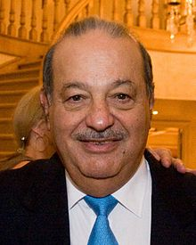

Slim was born on January 28, 1940, in Mexico City,to Julián Slim Haddad (born Khalil Salim Haddad Aglamaz) and Linda Helú Atta, both Maronite Catholics of Lebanese descent.
Slim always knew he wanted to be a businessman, and he began to develop his business and investment acumen at a young age.He received business lessons from his father Julian, who taught him finance, management and accounting, teaching him how to read financial statements as well as the importance of keeping accurate financial records, a practice that Slim carries on to this day.
At the age of 11, Carlos invested in a government savings bond that taught him about the concept of compound interest. He eventually saved every financial and business transaction he made into a personal ledger book which he keeps to this day.At the age of 12, he made his first stock purchase, by purchasing shares in a Mexican bank.By the age of 15, Slim had become a shareholder in Mexico’s largest bank.At the age of 17, he earned 200 pesos a week working for his father's company.He went on to study civil engineering at the National Autonomous University of Mexico, where he also concurrently taught algebra and linear programming.
Though Slim was a civil engineering major because of his fascination with numbers, he also displayed an interest in economics. He took economics courses in Chile once he finished his engineering degree. Graduating as a civil engineering major, Slim has stated that his mathematical prowess and his background of linear programming was a key factor in helping him gain an edge in the business world, especially when reading financial statements.
Slim’s father Khalil Salim Haddad Aglamaz emigrated to Mexico from Lebanon (then part of the Ottoman Empire) in 1902 (he was 14), and later changed his name to Julián Slim Haddad.It was not uncommon for Lebanese children to be sent abroad before they reached the age of 15 to avoid being conscripted into the Ottoman Army, and four of Haddad's older brothers were already living in Mexico at the time of his arrival.
In 1911 Julián established a dry goods store, La Estrella de Oriente (The Star of the Orient). La Estrella de Oriente was an important dry goods store located on Venustiano Carranza where it had merchandise worth more than $100,000 by January 21, 1921, only ten years after the business was founded.By 1921, he had begun investing in real estate in the flourishing commercial district of Mexico City where Julián would acquire prime real estate at fire sale prices and in Zocalo District during the 1910–17 Mexican Revolution.By 1922, Julián's net worth reached $1,012,258 pesos and was diversified within various assets including real estate, businesses and various stocks.
In August 1926, Julián Slim married Linda Helú Atta. Linda was born in Parral, Chihuahua, of Lebanese parents who had immigrated to Mexico in the late 19th century. Upon immigrating to Mexico, her parents had founded one of the first Arabic-language magazines for the Lebanese-Mexican community, using a printing press they had brought with them. Julian and Linda had six children: Nour, Alma, Julián, José, Carlos and Linda. Julián senior died in 1953, when Carlos was just 13 years old.Carlos Slim's mother,
Julian’s business ventures became the source of considerable wealth for himself and his family.As a result of financial prosperity of these ventures, Julian soon became a prominent and wealthy businessman, where he was able to make investments during bad economic cycles due to Mexico's frequent economic downturns.Julián was known for his business savvy, strong work ethic, and commitment to traditional Lebanese moral values. Having a deep understanding of business that was considered ahead of his time, one of Julián's many pioneering business concepts was an efficient business as one that sold large volumes at smaller margins, and with payment facilities, factors that are prevalent in many large discount stores today.
Carlos Slim was married to Soumaya Domit from 1967 until her death in 1999. Among her interests were various philanthropic projects, including the creation of a legal framework for organ donation. Slim has six children: Carlos, Marco Antonio, Patrick, Soumaya, Vanessa, and Johanna. Slim's fortune has given rise to a family business empire and he often acquires shares on behalf of himself and his children. His three older sons serve in key positions in the companies controlled by Slim where most are involved in the day-to-day running of Slim's business empire.Slim underwent heart surgery in 1999. In high school, Slim's favorite subjects were history,cosmography, and mathematics.
In his office, Slim does not keep a computer and instead prefers to keep all his financial data in thoroughly kept notebooks.Slim is well versed in technology but prefers to write by hand instead of on a computer. Due to the vast size of his business empire, Slim often jokes that he can't keep track of all the companies he manages